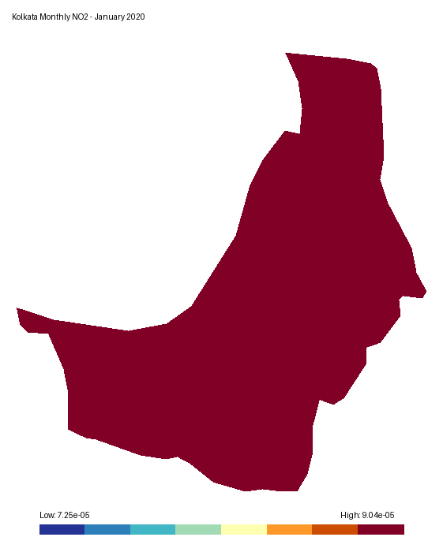

Kolkata: satellite NO₂ and residential population, 2020
Question: What proportion of women aged 15–49 live in areas with relatively high satellite-observed tropospheric NO₂?
Method
FAO GAUL 2015 Kolkata district; 2020 Sentinel-5P OFFL NO₂ observations masked where cloud fraction exceeds 0.30; annual and monthly pixel means. High means at or above the city's annual 75th percentile (0.00008690 mol/m²). WorldPop 2020 female age bins 15–49 are summed by cell. The coarse NO₂ class is transferred to WorldPop grid cell centres using nearest-neighbour assignment.
Annual tropospheric NO₂
Women in relatively high NO₂ areas
Numerical results
| Study area | FAO GAUL 2015 ADM2 Kolkata district |
|---|---|
| Year | 2020 |
| Annual city mean NO₂ (mol/m²) | 0.00008349 |
| High NO₂ threshold, pixel 75th percentile (mol/m²) | 0.00008690 |
| Women aged 15–49, district (WorldPop estimate) | 821208 |
| Women aged 15–49 in high NO₂ cells (estimate) | 177843 |
| Exposure share of all district women aged 15–49 (%) | 21.66 |
| Women with valid annual NO₂ data (%) | 100.00 |
Monthly NO₂ animation

Same map scale in every frame: 0–0.0002 mol/m². Upper values saturate on display.

Interpretation and limitations
About 177,843 of 821,208 estimated women aged 15–49 (21.66%) resided in relatively high NO₂ areas. The highest monthly district mean was in January and the lowest in July. These results describe residence and satellite NO₂ columns; they do not measure individual or ground-level exposure. Sentinel-5P (~1.1 km) is much coarser than WorldPop (~100 m), and cloud filtering, missing observations and the GAUL district rather than municipal boundary affect interpretation. The high threshold is local and statistical, not a health standard.